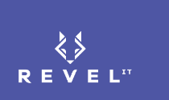

Confidential client opportunity · Independent candidate materials412.287.8640 · russelldudek@gmail.com
linkedin.com/in/russelldudek
russelldudek.github.io · github.com/russelldudek
Higher AI yield.
Turn executive demand into a governed portfolio that retains value through architecture, delivery, adoption, and measurable outcomes.
Executive Thesis
Actual mandate: build an enterprise AI operating system that makes intake, prioritization, architecture, governance, delivery, adoption, ownership, economics, and learning one coherent portfolio rather than a set of disconnected pilots.
Why the role exists now
- AI demand is likely outpacing consistent decision architecture.
- Multiple platforms and vendors make build-vs-buy and integration decisions harder.
- Generative, agentic, ML, and automation use cases carry different risk and ownership burdens.
- Executive leaders need measurable business outcomes, not activity reports.
Central contradiction
The enterprise must move fast enough to learn while governing early enough to avoid rework, shadow AI, architecture debt, weak ownership, and adoption failure. Over-centralize and business units route around the system; under-govern and every use case rebuilds risk and integration from scratch.
Operating hypothesis
Value is probably being lost at five transitions: demand to qualified opportunity, opportunity to governed design, design to accepted solution, solution to changed work, and changed work to measured outcome. This is a discovery hypothesis, not a claim about the confidential client.
Candidate point of view
Manage AI as a yield system. Make each transition produce an explicit disposition, owner, evidence standard, and next decision. The goal is not maximum throughput of ideas; it is maximum retained value per unit of capital, attention, and change capacity.
Operating Tensions
| Tension | Failure if unmanaged | Director mechanism |
|---|---|---|
| Speed vs trust | Late security/legal review, rework, unsafe use | Early risk tiering, human authority, evidence conditions |
| Enterprise leverage vs local context | Unused standards or bespoke sprawl | Reference patterns plus explicit exception ownership |
| Executive ambition vs frontline adoption | Launch without retained behavior | Workflow baseline, champions, standard work, friction signals |
| Build vs buy | Vendor lock-in or unnecessary custom work | Decision record across value, control, integration, economics |
| Breadth vs capacity | Invisible queue delay and partial delivery | Portfolio WIP limits and fund/condition/hold/stop decisions |
412.287.8640 · russelldudek@gmail.com
linkedin.com/in/russelldudek
russelldudek.github.io · github.com/russelldudek
The Yield System
Every stage protects a different kind of value.
1 · Qualify
Name the decision or workflow, owner, baseline, business consequence, AI leverage hypothesis, readiness, and change burden.
2 · Govern
Bind data and identity boundaries, human authority, security, privacy, legal, responsible-AI controls, and evidence expectations.
3 · Deliver
Choose a reference pattern, make build-vs-buy explicit, define acceptance, telemetry, cost, support, rollback, and production ownership.
4 · Embed
Redesign roles, standard work, training, exceptions, escalation, champions, and reinforcement so the intervention survives the launch.
5 · Realize
Measure outcome, productivity, quality, risk, retained use, economics, reuse, and learning velocity; scale, revise, hold, or retire.
Disposition vocabulary
Fund · Condition · Narrow · Hold · Stop · Standardize · Scale. Each is an executive decision with an owner and review date.
Decision Rights
| Decision | Recommended accountable authority | Required evidence |
|---|---|---|
| Enter funded portfolio | Business outcome owner + AI portfolio leader | Baseline, value hypothesis, owner, readiness, capacity |
| Approve architecture pattern | Enterprise architecture / platform authority | Data, identity, integration, operability, cost, reuse |
| Accept responsible use | Business, security, legal/privacy, risk as appropriate | Human authority, consequence, controls, evaluation |
| Release to workflow | Product/solution owner + workflow owner | Acceptance suite, support, rollback, training, exceptions |
| Scale or retire | Business sponsor + portfolio governance | Realized value, retained use, trust, economics, learning |
412.287.8640 · russelldudek@gmail.com
linkedin.com/in/russelldudek
russelldudek.github.io · github.com/russelldudek
Why this evidence transfers
Leadership through mechanisms, not title repetition.
Proof Map
| Role need | Verified evidence | Transfer logic |
|---|---|---|
| Enterprise AI opportunity and governance | DudeWorth readiness frameworks; agentic workflow patterns with retrieval, human judgment, evaluation, escalation, and governance rails | Direct work structuring value, readiness, authority, controls, and reuse |
| Cross-functional AI-enabled transformation | Vape-Jet transformation across production, purchasing, quality, customer success, support, engineering, ERP/Odoo, CRM, collaboration, telemetry | Current operating work across the seams where AI delivery succeeds or fails |
| Scaled operating mechanisms | Amazon 24/7 launch and execution supporting approximately five million second-day orders annually | Visibility, standard work, cadence, escalation, and customer-backward execution |
| Manufacturing and high reliability | Compunetics engineering, manufacturing, quality, complex technical programs, process control | Architecture and innovation must survive consequence, quality, and delivery reality |
| Regulated and autonomous systems | ZeusVu 100% safety record; TensorFlow-based inventory concepts; governed medical delivery concepts | Risk, chain of custody, human authority, and field execution |
Strongest Credible Objection
Correct. Do not claim otherwise. The response is adjacent evidence plus a bounded proof: learn the actual portfolio and architecture, partner with domain authorities, make decisions and ownership visible, and prove fit through one representative workflow and one portfolio review before prescribing a global model.
Best Interview Answer
“You should test whether my manufacturing and operating depth translates to this enterprise scale. I would. I have not held this exact title, but I have repeatedly done the underlying work: connect technical systems to business outcomes, make complex work visible, build decision and escalation mechanisms, preserve quality and human authority, and drive adoption in real operations. I would not arrive with a generic AI doctrine. I would arrive ready to learn the portfolio, architecture, risk, and workflow reality—and make the next decisions clearer.”
412.287.8640 · russelldudek@gmail.com
linkedin.com/in/russelldudek
russelldudek.github.io · github.com/russelldudek
Questions for the room
Use questions to discover the mandate—not to perform certainty.
Executive and Portfolio
- Which business priorities are creating the strongest AI demand, and where is demand currently entering?
- What percentage of ideas receive a clear fund, condition, hold, or stop decision?
- Where does portfolio scarcity show up today: architecture, data, engineering, security, legal, change capacity, or business ownership?
- What would make this hire an obvious success at 12 months?
Architecture, Governance, and Delivery
- Which AI capabilities are already standardized, and where are teams rebuilding the same integration or controls?
- At what point do security, legal, privacy, and responsible-AI actors gain the ability to change a design?
- How are ChatGPT Enterprise, Copilot, Claude, Azure OpenAI, AWS, GCP, and other platforms governed across identity, data, cost, and vendor risk?
- Who owns production operations, evaluation, incident response, and lifecycle decisions after delivery?
Adoption and Value
- Which initiatives are technically live but not embedded in standard work?
- How are retained use, override behavior, task success, quality, productivity, and realized economics measured?
- Who is accountable when a use case produces local benefit but creates enterprise architecture or control debt?
- What does the organization most need this director to stop doing?
Source and Evidence Note
Role intelligence is based on the job description supplied in chat and current public Revel IT sources. The end client is confidential; all client-specific operating conditions are labeled as hypotheses for discovery. Career evidence is limited to verified candidate evidence and does not invent metrics, titles, clients, deployments, or ownership.